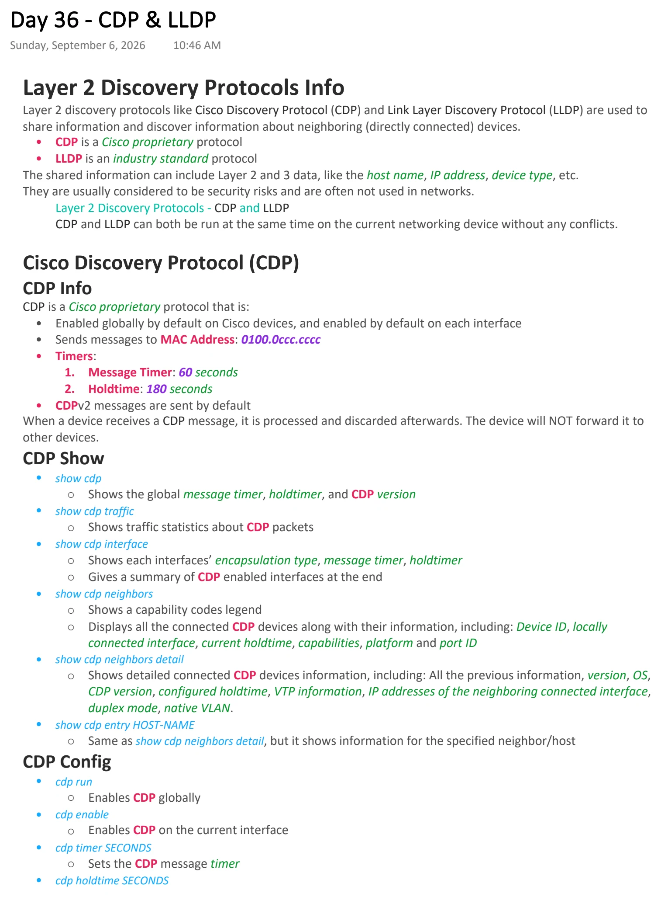
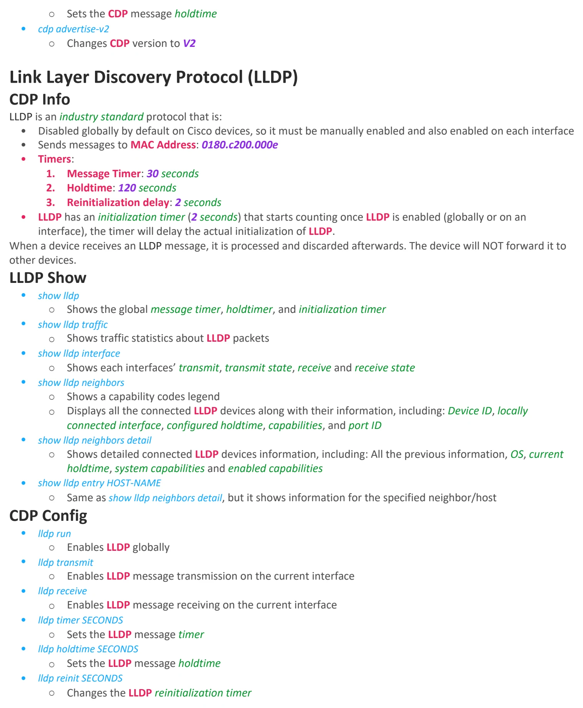

CDP & LLDP
Download original PDF

Text view — CDP & LLDP
Extracted from the original export. Diagrams and some formatting appear in the notes above.
Day 36 - CDP & LLDP Sunday, September 6, 2026 10:46 AM Layer 2 Discovery Protocols Info Layer 2 discovery protocols like Cisco Discovery Protocol (CDP) and Link Layer Discovery Protocol (LLDP) are used to share information and discover information about neighboring (directly connected) devices. • CDP is a Cisco proprietary protocol • LLDP is an industry standard protocol The shared information can include Layer 2 and 3 data, like the host name, IP address, device type, etc. They are usually considered to be security risks and are often not used in networks. Layer 2 Discovery Protocols - CDP and LLDP CDP and LLDP can both be run at the same time on the current networking device without any conflicts. Cisco Discovery Protocol (CDP) CDP Info CDP is a Cisco proprietary protocol that is: • Enabled globally by default on Cisco devices, and enabled by default on each interface • Sends messages to MAC Address: 0100.0ccc.cccc • Timers: 1. Message Timer: 60 seconds 2. Holdtime: 180 seconds • CDPv2 messages are sent by default When a device receives a CDP message, it is processed and discarded afterwards. The device will NOT forward it to other devices. CDP Show • show cdp ○ Shows the global message timer, holdtimer, and CDP version • show cdp traffic ○ Shows traffic statistics about CDP packets • show cdp interface ○ Shows each interfaces’ encapsulation type, message timer, holdtimer ○ Gives a summary of CDP enabled interfaces at the end • show cdp neighbors ○ Shows a capability codes legend ○ Displays all the connected CDP devices along with their information, including: Device ID, locally connected interface, current holdtime, capabilities, platform and port ID • show cdp neighbors detail ○ Shows detailed connected CDP devices information, including: All the previous information, version, OS, CDP version, configured holdtime, VTP information, IP addresses of the neighboring connected interface, duplex mode, native VLAN. • show cdp entry HOST-NAME ○ Same as show cdp neighbors detail, but it shows information for the specified neighbor/host CDP Config • cdp run ○ Enables CDP globally • cdp enable ○ Enables CDP on the current interface • cdp timer SECONDS ○ Sets the CDP message timer • cdp holdtime SECONDS ○ Sets the CDP message holdtime • cdp advertise-v2 ○ Changes CDP version to V2 Link Layer Discovery Protocol (LLDP) CDP Info LLDP is an industry standard protocol that is: • Disabled globally by default on Cisco devices, so it must be manually enabled and also enabled on each interface • Sends messages to MAC Address: 0180.c200.000e • Timers: 1. Message Timer: 30 seconds 2. Holdtime: 120 seconds 3. Reinitialization delay: 2 seconds • LLDP has an initialization timer (2 seconds) that starts counting once LLDP is enabled (globally or on an interface), the timer will delay the actual initialization of LLDP. When a device receives an LLDP message, it is processed and discarded afterwards. The device will NOT forward it to other devices. LLDP Show • show lldp ○ Shows the global message timer, holdtimer, and initialization timer • show lldp traffic ○ Shows traffic statistics about LLDP packets • show lldp interface ○ Shows each interfaces’ transmit, transmit state, receive and receive state • show lldp neighbors ○ Shows a capability codes legend ○ Displays all the connected LLDP devices along with their information, including: Device ID, locally connected interface, configured holdtime, capabilities, and port ID • show lldp neighbors detail ○ Shows detailed connected LLDP devices information, including: All the previous information, OS, current holdtime, system capabilities and enabled capabilities • show lldp entry HOST-NAME ○ Same as show lldp neighbors detail, but it shows information for the specified neighbor/host CDP Config • lldp run ○ Enables LLDP globally • lldp transmit ○ Enables LLDP message transmission on the current interface • lldp receive ○ Enables LLDP message receiving on the current interface • lldp timer SECONDS ○ Sets the LLDP message timer • lldp holdtime SECONDS ○ Sets the LLDP message holdtime • lldp reinit SECONDS ○ Changes the LLDP reinitialization timer Day 36 - CDP & LLDP Sunday, September 6, 2026 10:46 AM Layer 2 Discovery Protocols Info Layer 2 discovery protocols like Cisco Discovery Protocol (CDP) and Link Layer Discovery Protocol (LLDP) are used to share information and discover information about neighboring (directly connected) devices. • CDP is a Cisco proprietary protocol • LLDP is an industry standard protocol The shared information can include Layer 2 and 3 data, like the host name, IP address, device type, etc. They are usually considered to be security risks and are often not used in networks. Layer 2 Discovery Protocols - CDP and LLDP CDP and LLDP can both be run at the same time on the current networking device without any conflicts. Cisco Discovery Protocol (CDP) CDP Info CDP is a Cisco proprietary protocol that is: • Enabled globally by default on Cisco devices, and enabled by default on each interface • Sends messages to MAC Address: 0100.0ccc.cccc • Timers: 1. Message Timer: 60 seconds 2. Holdtime: 180 seconds • CDPv2 messages are sent by default When a device receives a CDP message, it is processed and discarded afterwards. The device will NOT forward it to other devices. CDP Show • show cdp ○ Shows the global message timer, holdtimer, and CDP version • show cdp traffic ○ Shows traffic statistics about CDP packets • show cdp interface ○ Shows each interfaces’ encapsulation type, message timer, holdtimer ○ Gives a summary of CDP enabled interfaces at the end • show cdp neighbors ○ Shows a capability codes legend ○ Displays all the connected CDP devices along with their information, including: Device ID, locally connected interface, current holdtime, capabilities, platform and port ID • show cdp neighbors detail ○ Shows detailed connected CDP devices information, including: All the previous information, version, OS, CDP version, configured holdtime, VTP information, IP addresses of the neighboring connected interface, duplex mode, native VLAN. • show cdp entry HOST-NAME ○ Same as show cdp neighbors detail, but it shows information for the specified neighbor/host CDP Config • cdp run ○ Enables CDP globally • cdp enable ○ Enables CDP on the current interface • cdp timer SECONDS ○ Sets the CDP message timer • cdp holdtime SECONDS ○ Sets the CDP message holdtime • cdp advertise-v2 ○ Changes CDP version to V2 Link Layer Discovery Protocol (LLDP) CDP Info LLDP is an industry standard protocol that is: • Disabled globally by default on Cisco devices, so it must be manually enabled and also enabled on each interface • Sends messages to MAC Address: 0180.c200.000e • Timers: 1. Message Timer: 30 seconds 2. Holdtime: 120 seconds 3. Reinitialization delay: 2 seconds • LLDP has an initialization timer (2 seconds) that starts counting once LLDP is enabled (globally or on an interface), the timer will delay the actual initialization of LLDP. When a device receives an LLDP message, it is processed and discarded afterwards. The device will NOT forward it to other devices. LLDP Show • show lldp ○ Shows the global message timer, holdtimer, and initialization timer • show lldp traffic ○ Shows traffic statistics about LLDP packets • show lldp interface ○ Shows each interfaces’ transmit, transmit state, receive and receive state • show lldp neighbors ○ Shows a capability codes legend ○ Displays all the connected LLDP devices along with their information, including: Device ID, locally connected interface, configured holdtime, capabilities, and port ID • show lldp neighbors detail ○ Shows detailed connected LLDP devices information, including: All the previous information, OS, current holdtime, system capabilities and enabled capabilities • show lldp entry HOST-NAME ○ Same as show lldp neighbors detail, but it shows information for the specified neighbor/host CDP Config • lldp run ○ Enables LLDP globally • lldp transmit ○ Enables LLDP message transmission on the current interface • lldp receive ○ Enables LLDP message receiving on the current interface • lldp timer SECONDS ○ Sets the LLDP message timer • lldp holdtime SECONDS ○ Sets the LLDP message holdtime • lldp reinit SECONDS ○ Changes the LLDP reinitialization timer